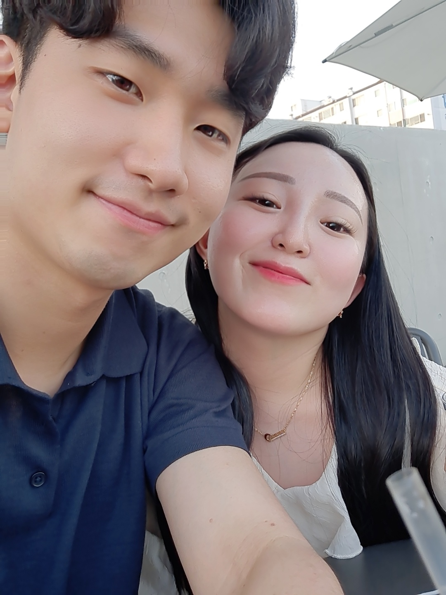
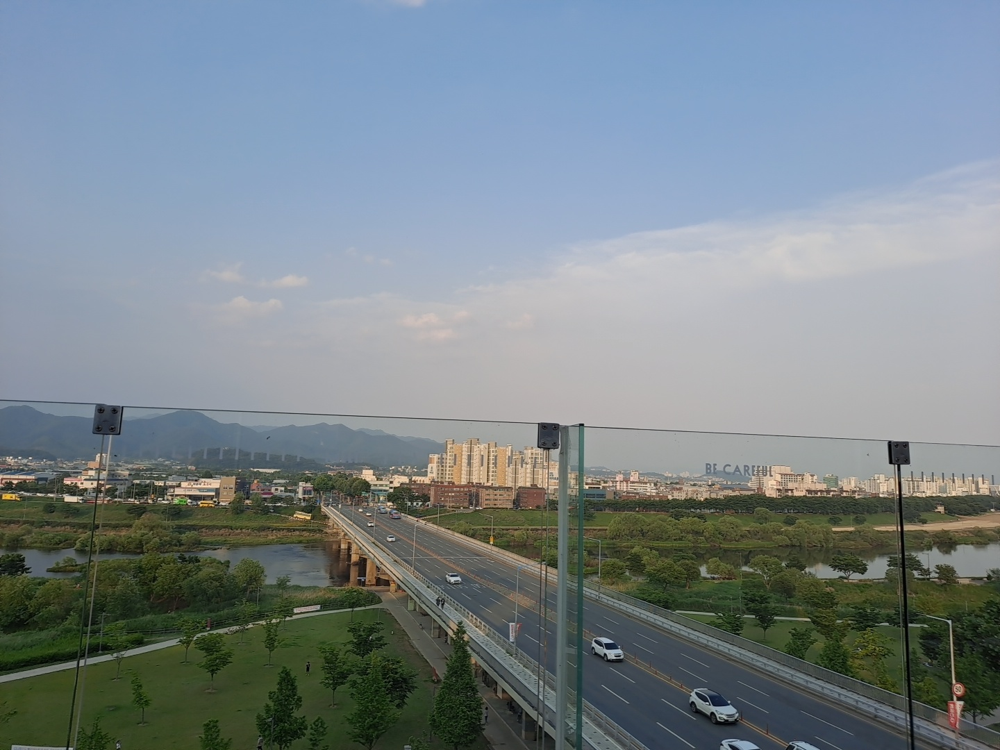
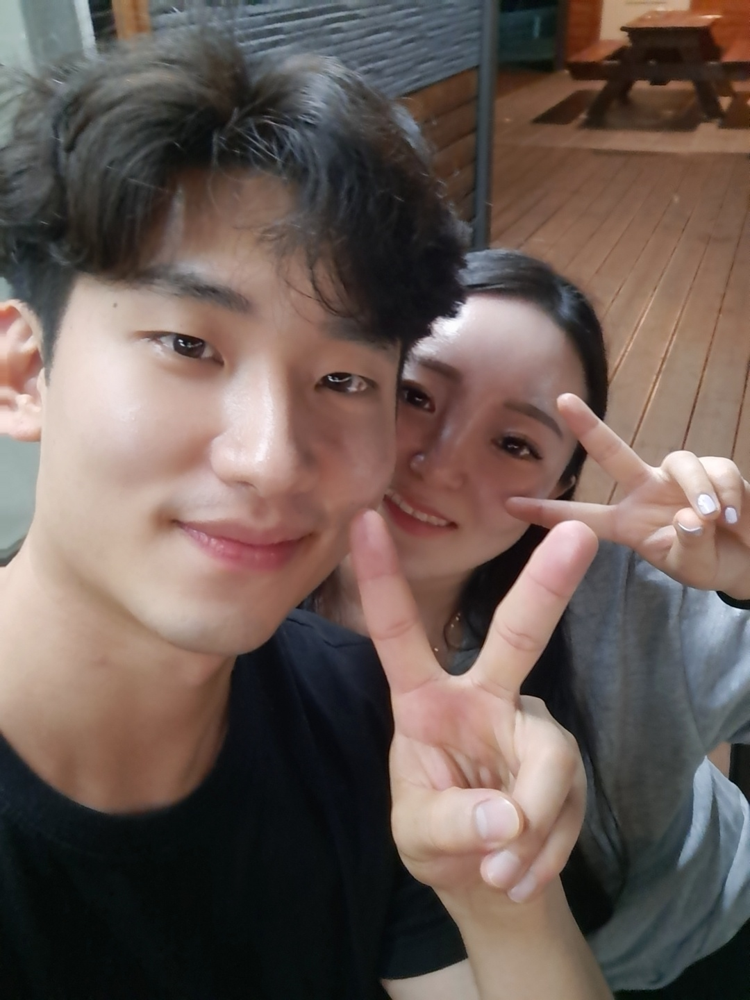
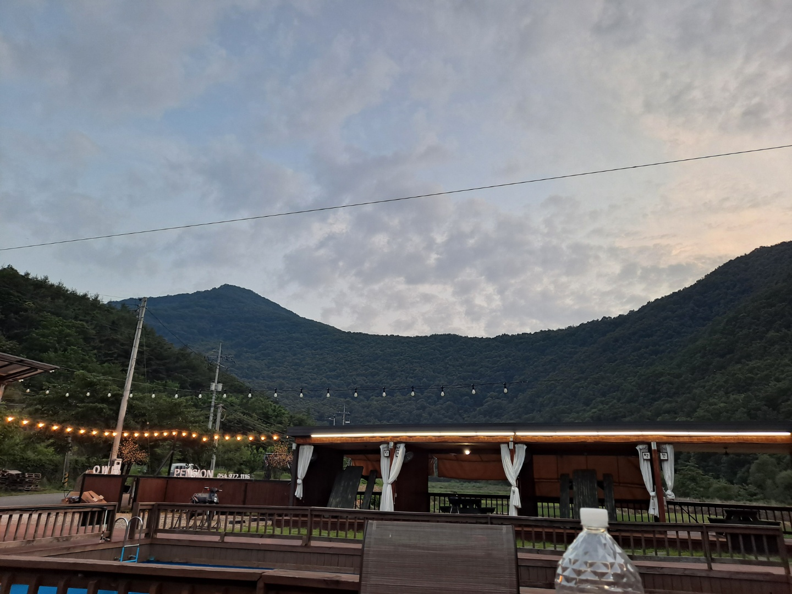
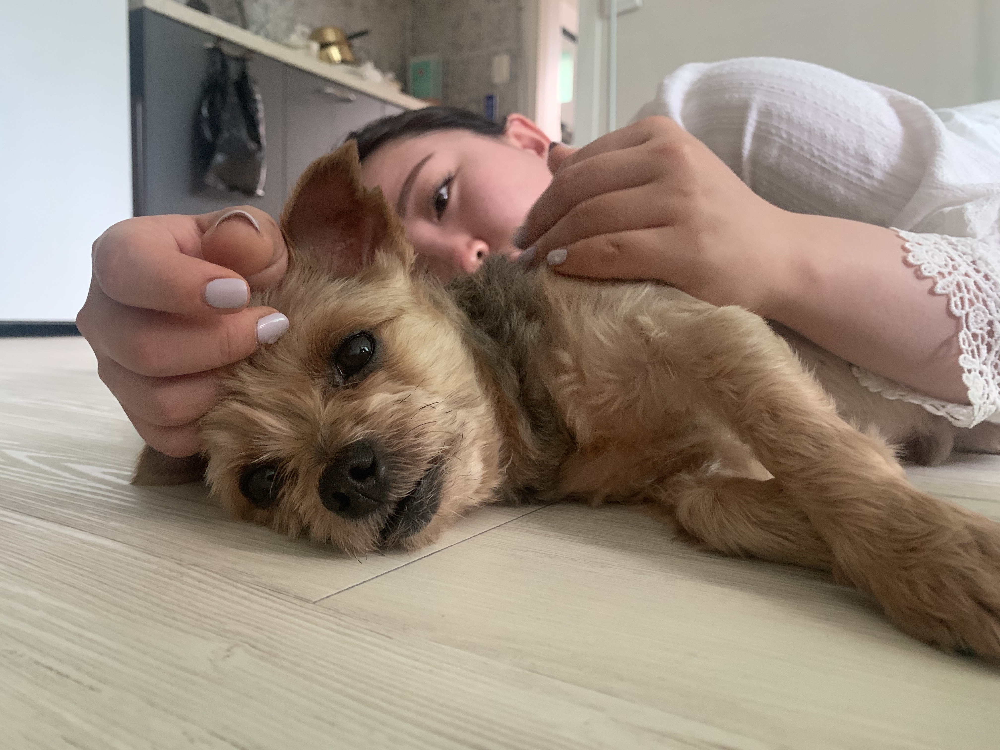
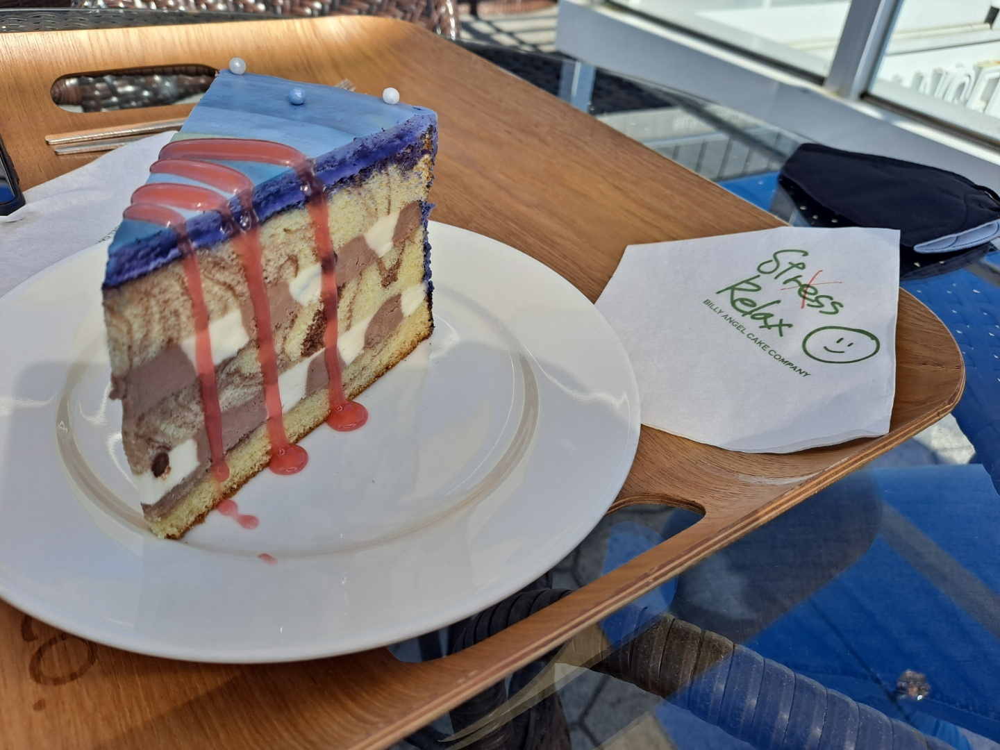
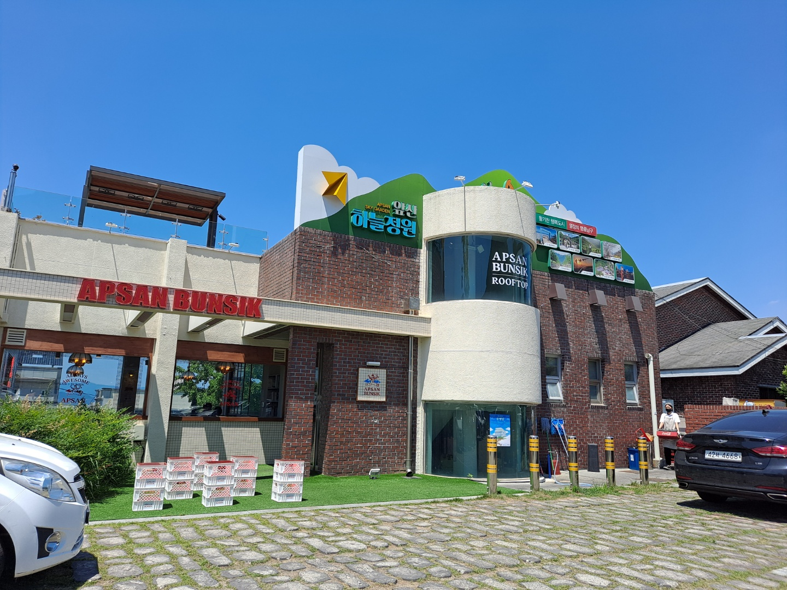
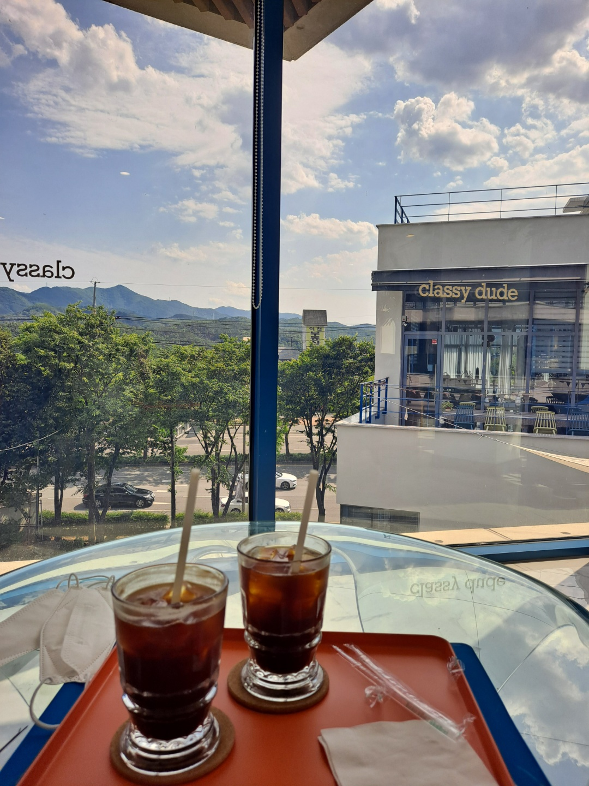
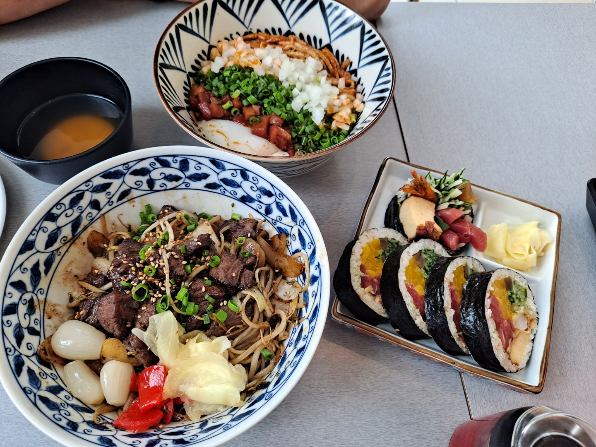
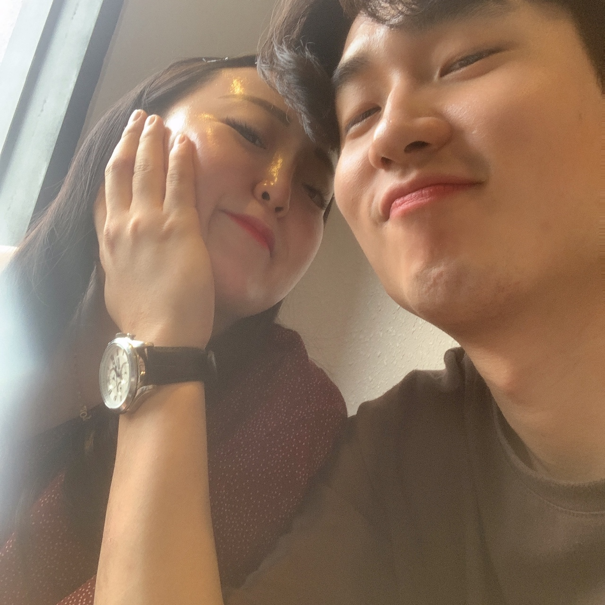

애틋했던 우리의 6월
6월6일 일요일-신세계바비레드.컨저링.멜트카페

이 날은 동생 생일이네!
아마 전 날 너는 친구들이랑 게스트하우스에서 놀았겠지?
아침에 내가 데리러 갔다가 신세계가서 바비레드 먹구 영화보구 멜트간 날이야!
바비레드에서 밥이 있다는 사실을 몰라서 아쉬웠당..ㅎㅎ
멜트도 가보고 싶었었는데 너랑 가서 너무 좋았오!
동생 생일 때문에 어쩔 수 없이 헤어졌는데
너무 아쉬운하루였다..
6월12일 토요일-팔공산아울펜션

예약하고 우리가 애타게 기다리던 첫 펜션 아울!
비록 대구 팔공산에 있는 펜션이지만 너랑 가는 첫 펜션이라 너무 설레었다.
같이 홈플러스에서 장보는 것도 재미있었고, 야외에서 숯불에 고기 구워먹는 것도 너무 좋았다.
해가 질 때쯤 산으로 둘러 쌓인 하늘도 예뻤고 그 분위기가 너무 좋았다.
해가 지고 술 마시는데 장난꾸러기 아저씨들도 웃겨서 기억에 남는다!ㅋㅋ
1박이라 다소 아쉬웠지만 우리에겐 내일이 있으니 다음 설렘을 기대하며 아쉬운 마음을 잠시 넣어둔다.
다음에 또 놀러가자♥
6월13일 일요일-팔공산착한냉면.카페우즈

이 날은 카페 때문에 망한 하루였던 것 같다ㅋㅋ
펜션에서 나와서 점심까지는 괜찮았는데
우리가 갔던 카페 우즈는 사람들이 너무 많아서 자리가 없었다..
힘들게 걸어서 올라갔다가 자리없어서 힘들게 내려왔지..ㅎㅎ
그러고나서 쫑이가 처음으로 다슬이집에 놀러왔다!
나는 안중에도 없었다.. (주륵)
위 사진으로 너가 쫑이에게 푹 빠져있었던걸 증명해보겠다!
6월17일 목요일-집에서호식이
천안, 청주 출장갔다가 돌아온 날이었다.
1박2일이었지만 지역만 잠시 떨어졌을 뿐인데도 너무 보고싶었다.
대구로 돌아와서 축구하고 씻고 다슬이집에 자기로 했다!
피곤했지만 다슬이가 너무 보고싶어서 그랬다.
밥겸술로 호식이랑 소주마셨다.
다슬이랑 마시는 술은 언제나 술술 들어간다.
그치만 다슬이의 입술이 제일 맛있는 것 같다!ㅋㅋ
다슬 입술 술이 술술 (뭔가 주문기도 같다)
6월19일 토요일-빌리엔젤카페.안지랑.

앞산 카페 중에 가장 기억에 남는 카페는 빌리엔젤이다.
다슬이랑 두번째로 만난 날 여기서 좋은 시간을 보냈기 때문이다.
저번에 실패한 케익을 만회하기 위해 한 번더 방문했다.
우주 맛 케익은 역시나 성공했다. 저번에 먹었던 당근케익 보다는 맛있었지만
그 날의 날씨는 처음 갔을 때 보단 인상 깊지 않았다.
다음에 또 올 때는 더 인상 깊은 하루가 되길!
6월20일 일요일-앞산분식.클래시듀드.킬러의보디가드2

이 날은 큰골집이 아닌 앞산 분식에 갔다.
도착하고 밖에서 가게를 봤을 때 너무 예뻐서 기대가 컸다.
떡볶이랑 김밥은 맛있었는데 김말이랑 빵쪼가리는 별로였다.
그리고 영화를 보러가기 전 연호에 있는 클래시듀드에 가서 다슬이랑 커피를 마시는데
조용하기도 하고 배도 불러서 낮잠을 때렸다.
잘잤다.ㅋㅋㅋ
영화보면서도 중간중간 졸았지만 그래도 재미있었다.
영화까지 다 보고 헤어지려니 너무 아쉬웠다.
더군다나 그 다음날은 수도권으로 출장나가야 했기 때문에 우울해졌었다..
다시는 이런 일이 없기를..
아디오스...
6월25일 금요일-뀨집가서회먹기
예정에 없던 야근을 하고 늦게 마쳐서 다슬이를 만났다.
쫑이가 집에 혼자 있어서 우리집에 잠시 들렸다가 다슬이가 자고 가기로 했다.
처음으로 다슬이가 우리집에 온 날이자 자고간 날이다.ㅎㅎ
빨리 독립해서 내 집에 초대하고 싶다.
매일 우리집에서 자구 같이 출근하자♥
6월26일 토요일-만촌고봉민김밥.안지랑곱창.노래방
또 안지랑이다!
뭔가 앞산 근처에 집을 구해야할 것 같다.
역시나 홍림을 가서 간장곱창에 쏘주를 적셨다.
맛있었다. 언제 먹어도 맛있는 것 같다 ㅎㅎ
이 날 너무 한게 없어서 아쉬움에 노래방을 갔다.
재미있어서 시간가는 줄 모르고 놀다보니 하루가 끝나버렸다!
하루 빨리 앞산에 집을 구해야겠다.
6월27일 일요일-앞산료미.앞산시그널카페.발신제한영화

하.. 료미
황리단길에 소바카게 생각이 났다.
또 당한 것이다.
비싸기만 겁나 비싸고 소바는 역시나 별로였다.
나는 이제 소바를 끊었다.
김밥은 또 겁나 크다.. 16,000원에 5개짜리 김밥..
덮밥은 나름 괜찮았다!
밥을 먹고 시그널 카페에 갔는데 안지랑에 이런 곳이.. (무전기 졸귀탱)
커피 다 마시고 발신제한을 보러갔다. 결말이 좀 별로였다..
헤어지고 집에와서 친구들이랑 게임을 했는데 다슬이 연락이 오는 줄 몰랐다.
먼저 잔다길래 피곤해서 그런가보다 했는데 서운했던 것 같다..
미안해 츄리야..ㅜㅜ
6월30일 수요일-만촌막창도둑
오늘은 퇴근하고 다슬이랑 저녁을 먹기로 했다!
다음날이 연차라 조금 늦게까지 업무를 마무리하고 다슬이를 만났다.
퇴근하고 다슬이랑 마시는 술은 끝내주게 맛있었다.
마음속으로 주문을 외워본다. 다슬 입술 술이 술술!!
주문을 외우니 간에서 버프 효과가 발동되었다!
맛있게 먹고 츄리랑 집에 들어가서 잤다!
6월의 마지막 밤도 재미있었다.